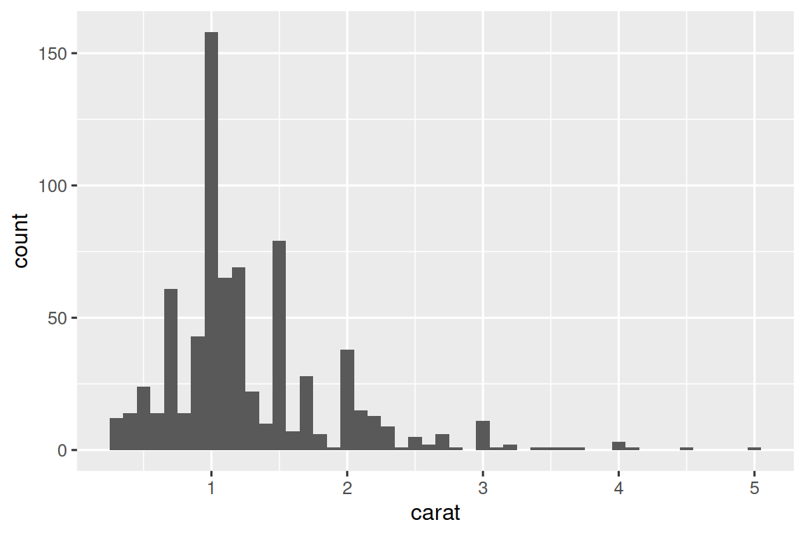

library(tidyverse)반복
R에서의 반복은 대개(generally) 암묵적(implicit)이며 무료로(for free) 얻을 수 있기 때문에(so much of it is) 다른 프로그래밍 언어와는 상당히 다르게(rather different from) 보이는 경향(tends to look)이 있습니다.
예를 들어, R에서 숫자 벡터 x를 두 배로 만들고 싶다면 그냥(just) 2 * x를 쓰면(write) 됩니다. 대부분의 다른 언어에서는 일종의(some sort of) for 루프를 사용하여 x의 각 요소를 명시적으로(explicitly) 두 배로 만들어야 합니다.
facet_wrap()과facet_grid()는 각 하위 집합(subset)에 대한 플롯을 그립니다(draws).group_by()와summarize()를 함께 사용하여 각 하위 집합에 대한 요약 통계(summary statistics)를 계산(computes)합니다.unnest_wider()와unnest_longer()는 리스트 열(list-column)의 각 요소에 대해 새 행과 열을 생성(create)합니다.
이제는 다른 함수를 입력으로 취하는 함수를 중심으로 구축(built around)되기 때문에 흔히(often) 함수형 프로그래밍(functional programming) 도구라고 불리는 좀 더(some more) 일반적인(general) 도구를 배울 차례(time to learn)입니다.
함수형 프로그래밍을 배우다 보면 쉽게(easily) 추상적인 것(abstract)으로 방향이 틀어질(veer into) 수 있지만, 이 장에서는 여러 열 수정, 여러 파일 읽기, 여러 객체 저장이라는 세 가지 일반적인 작업(common tasks)에 중점을 두어(focusing on) 구체적으로(concrete) 유지(keep things)하겠습니다.
1 여러 열 수정
이 간단한 티블이 있고 관측치(observations)의 수를 세고(count) 모든 열의 중앙값(median)을 계산하고(compute) 싶다고 상상해 보세요.
set.seed(1014)
df <- tibble(
a = rnorm(10),
b = rnorm(10),
c = rnorm(10),
d = rnorm(10)
)복사해서 붙여넣기(copy-and-paste)로 수행할 수 있습니다.
df |> summarize(
n = n(),
a = median(a),
b = median(b),
c = median(c),
d = median(d),
)
#> # A tibble: 1 × 5
#> n a b c d
#> <int> <dbl> <dbl> <dbl> <dbl>
#> 1 10 -0.246 -0.287 -0.0567 0.144이것은 두 번 이상 복사해서 붙여넣지(never copy and paste more than twice) 않는다는 경험 법칙(rule of thumb)을 깨뜨리며(breaks), 수십(tens) 또는 수백(hundreds) 개의 열이 있는 경우 이 작업이 매우 지루해질(tedious) 것이라고 상상할 수 있습니다. 대신(Instead) across()를 사용할 수 있습니다.
df |> summarize(
n = n(),
across(a:d, median),
)
#> # A tibble: 1 × 5
#> n a b c d
#> <int> <dbl> <dbl> <dbl> <dbl>
#> 1 10 -0.246 -0.287 -0.0567 0.144across()에는 특히(particularly) 중요한 세 가지 인수가 있으며, 다음 섹션에서 자세히(in detail) 논의(discuss)하겠습니다. across()를 사용할 때마다 처음 두 개를 사용하게 됩니다. 첫 번째 인수 .cols는 반복할(iterate over) 열을 지정(specifies)하고, 두 번째 인수 .fns는 각 열에 대해 수행할 작업(what to do with)을 지정합니다. 출력 열의 이름에 대한 추가 제어(additional control)가 필요할 때 .names 인수를 사용할 수 있으며, 이는 mutate()와 함께 across()를 사용할 때 특히 중요합니다. 또한 filter()와 함께 작동하는 두 가지 중요한 변형(variations)인 if_any() 및 if_all()에 대해서도 논의하겠습니다.
1.1 .cols를 사용하여 열 선택하기
across()의 첫 번째 인수 .cols는 변환(transform)할 열을 선택합니다. 이것은 select()(?@sec-select 참조)와 동일한 지정(specifications)을 사용하므로 starts_with() 및 ends_with()와 같은 함수를 사용하여 이름을 기반으로 열을 선택할 수 있습니다.
across()에 특히 유용한 두 가지 추가 선택 기술(selection techniques)이 있습니다. everything()과 where()입니다. everything()은 간단(straightforward)합니다. 모든(every) (그룹화되지 않은) 열을 선택합니다.
set.seed(1014)
df <- tibble(
grp = sample(2, 10, replace = TRUE),
a = rnorm(10),
b = rnorm(10),
c = rnorm(10),
d = rnorm(10)
)
df |>
group_by(grp) |>
summarize(across(everything(), median))
#> # A tibble: 2 × 5
#> grp a b c d
#> <int> <dbl> <dbl> <dbl> <dbl>
#> 1 1 -0.244 -0.522 -0.0974 -0.251
#> 2 2 -0.247 0.468 0.112 0.0700그룹화(grouping) 열(여기서는 grp)은 summarize()에 의해 자동으로 보존(preserved)되므로 across()에 포함(included)되지 않는다는 점에 유의하세요.
where()를 사용하면(allows you to) 유형(type)을 기반으로 열을 선택할 수 있습니다.
where(is.numeric)은 모든 숫자(numeric) 열을 선택합니다.where(is.character)는 모든 문자열(string) 열을 선택합니다.where(is.Date)는 모든 날짜(date) 열을 선택합니다.where(is.POSIXct)는 모든 날짜-시간(date-time) 열을 선택합니다.where(is.logical)은 모든 논리(logical) 열을 선택합니다.
다른 선택자(selectors)와 마찬가지로(Just like) 부울 대수(Boolean algebra)와 결합(combine)할 수 있습니다. 예를 들어 !where(is.numeric)은 모든 숫자가 아닌(non-numeric) 열을 선택하고 starts_with("a") & where(is.logical)은 이름이 “a”로 시작하는 모든 논리 열을 선택합니다.
1.2 단일 함수 호출
across()의 두 번째 인수는 각 열이 변환되는 방식을 정의(defines)합니다. 위와 같은(as above) 간단한 경우에는 이것이 단일 기존(existing) 함수가 됩니다. 이것은 R의 아주 특별한(pretty special) 기능입니다. 우리는 하나의 함수(median, mean, str_flatten …)를 다른 함수(across)에 전달(passing)하고 있습니다. 이것은 R을 함수형 프로그래밍 언어로 만드는 기능 중 하나입니다.
이 함수를 across()에 전달하여 across()가 이를 호출할(call it) 수 있도록 한다는 점에 유의(note)하는 것이 중요합니다. 우리가 직접 호출하는 것이 아닙니다(not calling it ourselves). 즉, 함수 이름 뒤에(followed by) ()가 오면 안 됩니다. 잊어버린 경우(If you forget) 오류가 발생합니다.
df |>
group_by(grp) |>
summarize(across(everything(), median()))
#> Error in `summarize()`:
#> ℹ In argument: `across(everything(), median())`.
#> Caused by error in `median.default()`:
#> ! argument "x" is missing, with no default이 오류는 예를 들어 입력 없이 함수를 호출했기 때문에 발생(arises)합니다.
median()
#> Error in `median.default()`:
#> ! argument "x" is missing, with no default1.3 여러 함수 호출
더 복잡한 경우 추가 인수를 제공(supply)하거나 여러 변환을 수행(perform)하고 싶을 수 있습니다. 간단한 예제로 이 문제를 동기 부여해 보겠습니다(motivate this problem): 데이터에 결측값(missing values)이 있으면 어떻게 될까요?
median()은 이러한 결측값을 전파(propagates)하여 차선의(suboptimal) 출력을 제공합니다.
set.seed(1014)
rnorm_na <- function(n, n_na, mean = 0, sd = 1) {
sample(c(rnorm(n - n_na, mean = mean, sd = sd), rep(NA, n_na)))
}
df_miss <- tibble(
a = rnorm_na(5, 1),
b = rnorm_na(5, 1),
c = rnorm_na(5, 2),
d = rnorm(5)
)
df_miss |>
summarize(
across(a:d, median),
n = n()
)
#> # A tibble: 1 × 5
#> a b c d n
#> <dbl> <dbl> <dbl> <dbl> <int>
#> 1 NA NA NA 0.413 5이러한 결측값을 제거(remove)하기 위해 median()에 na.rm = TRUE를 함께 전달할(pass along) 수 있다면 좋을 것입니다. 그렇게 하려면(To do so) median()을 직접(directly) 호출하는 대신, 원하는(desired) 인수를 사용하여 median()을 호출하는 새 함수를 만들어야(create) 합니다.
df_miss |>
summarize(
across(a:d, function(x) median(x, na.rm = TRUE)),
n = n()
)
#> # A tibble: 1 × 5
#> a b c d n
#> <dbl> <dbl> <dbl> <dbl> <int>
#> 1 -0.703 -0.265 -0.522 0.413 5이것은 약간 장황(verbose)하므로 R에는 편리한 단축키(handy shortcut)가 함께 제공(comes with)됩니다. 이러한 종류의 일회용(throw away) 또는 익명(anonymous) 함수의 경우 function을 \로 바꿀 수 있습니다(replace).
익명이라는 것은 <-로 명시적인 이름을 부여(gave it a name)한 적이 없기 때문입니다. 프로그래머가 이에 대해 사용하는 또 다른 용어(term)는 “람다 함수(lambda function)”입니다.
이전(older) 코드에서는 ~ .x + 1과 같은 구문(syntax)을 볼 수 있습니다. 이것은 익명 함수를 작성하는 또 다른 방법(another way)이지만 tidyverse 함수 내부(inside)에서만 작동하며 항상 변수 이름 .x를 사용합니다. 이제는 기본 구문인 \(x) x + 1을 권장(recommend)합니다.
df_miss |>
summarize(
across(a:d, \(x) median(x, na.rm = TRUE)),
n = n()
)두 경우(In either case) 모두 across()는 효과적(effectively)으로 다음 코드로 확장(expands to)됩니다.
df_miss |>
summarize(
a = median(a, na.rm = TRUE),
b = median(b, na.rm = TRUE),
c = median(c, na.rm = TRUE),
d = median(d, na.rm = TRUE),
n = n()
)median()에서 결측값을 제거할 때 제거된 값이 몇 개인지 알 수 있다면 좋을 것입니다(nice to know just how many). across()에 두 개의 함수, 하나는 중앙값을 계산하는 함수이고 다른 하나는 결측값의 개수를 세는(count) 함수를 제공하여(supplying) 알아낼(find that out) 수 있습니다. .fns에 명명된 리스트(named list)를 사용하여 여러 함수를 제공합니다.
df_miss |>
summarize(
across(a:d, list(
median = \(x) median(x, na.rm = TRUE),
n_miss = \(x) sum(is.na(x))
)),
n = n()
)
#> # A tibble: 1 × 9
#> a_median a_n_miss b_median b_n_miss c_median c_n_miss d_median d_n_miss
#> <dbl> <int> <dbl> <int> <dbl> <int> <dbl> <int>
#> 1 -0.703 1 -0.265 1 -0.522 2 0.413 0
#> # ℹ 1 more variable: n <int>자세히 살펴보면(If you look carefully), 열이 {.col}_{.fn}과 같은 글루 지정자(glue specification)를 사용하여 명명(named)되었다는 것을 직감(intuit)할 수 있습니다. 여기서 .col은 원본 열의 이름이고 .fn은 함수의 이름입니다. 그것은 우연(coincidence)이 아닙니다! 다음 섹션에서 배우게(learn) 되겠지만(As), .names 인수를 사용하여 사용자 지정(your own) 글루 스펙(glue spec)을 제공할 수 있습니다.
1.4 열 이름
across()의 결과는 .names 인수에 제공된(provided) 지정자(specification)에 따라 명명(named according to)됩니다. 함수 이름이 먼저 나오게(come first) 하려면 고유한 이름을 지정할 수 있습니다.
df_miss |>
summarize(
across(
a:d,
list(
median = \(x) median(x, na.rm = TRUE),
n_miss = \(x) sum(is.na(x))
),
.names = "{.fn}_{.col}"
),
n = n(),
)
#> # A tibble: 1 × 9
#> median_a n_miss_a median_b n_miss_b median_c n_miss_c median_d n_miss_d
#> <dbl> <int> <dbl> <int> <dbl> <int> <dbl> <int>
#> 1 -0.703 1 -0.265 1 -0.522 2 0.413 0
#> # ℹ 1 more variable: n <int>.names 인수는 mutate()와 함께 across()를 사용할 때 특히 중요합니다. 기본적(By default)으로 across()의 출력에는 입력과 동일한 이름이 부여됩니다. 이는 mutate() 내부의 across()가 기존 열을 대체(replace)한다는 것을 의미합니다. 예를 들어 여기서는 coalesce()를 사용하여 NA를 0으로 대체합니다.
df_miss |>
mutate(
across(a:d, \(x) coalesce(x, 0))
)
#> # A tibble: 5 × 4
#> a b c d
#> <dbl> <dbl> <dbl> <dbl>
#> 1 -0.00557 -0.283 -1.86 -0.783
#> 2 0.255 -0.247 -0.522 -0.00289
#> 3 -1.40 -0.554 0.512 0.413
#> 4 -2.44 -0.244 0 0.724
#> 5 0 0 0 2.35대신 새 열을 생성(create new columns)하려면 .names 인수를 사용하여 출력에 새 이름을 지정(give)할 수 있습니다.
df_miss |>
mutate(
across(a:d, \(x) coalesce(x, 0), .names = "{.col}_na_zero")
)
#> # A tibble: 5 × 8
#> a b c d a_na_zero b_na_zero c_na_zero d_na_zero
#> <dbl> <dbl> <dbl> <dbl> <dbl> <dbl> <dbl> <dbl>
#> 1 -0.00557 -0.283 -1.86 -0.783 -0.00557 -0.283 -1.86 -0.783
#> 2 0.255 -0.247 -0.522 -0.00289 0.255 -0.247 -0.522 -0.00289
#> 3 -1.40 -0.554 0.512 0.413 -1.40 -0.554 0.512 0.413
#> 4 -2.44 -0.244 NA 0.724 -2.44 -0.244 0 0.724
#> 5 NA NA NA 2.35 0 0 0 2.351.5 필터링
across()는 summarize() 및 mutate()와 훌륭한 조화(great match)를 이루지만(but) 보통(usually) |나 &를 사용하여 여러 조건(conditions)을 결합하기 때문에 filter()와 함께 사용하기에는 더 어색(more awkward)합니다.
across()가 여러 논리 열을 생성하는 데 도움이 될 수 있음은 분명하지만(clear), 그 다음에는(but then what) 어떻게 해야 할까요? 그래서 dplyr은 if_any()와 if_all()이라는 두 가지 across() 변형(variants)을 제공합니다.
# df_miss |> filter(is.na(a) | is.na(b) | is.na(c) | is.na(d))와 동일함(same as)
df_miss |> filter(if_any(a:d, is.na))
#> # A tibble: 2 × 4
#> a b c d
#> <dbl> <dbl> <dbl> <dbl>
#> 1 -2.44 -0.244 NA 0.724
#> 2 NA NA NA 2.35
# df_miss |> filter(is.na(a) & is.na(b) & is.na(c) & is.na(d))와 동일함
df_miss |> filter(if_all(a:d, is.na))
#> # A tibble: 0 × 4
#> # ℹ 4 variables: a <dbl>, b <dbl>, c <dbl>, d <dbl>1.6 함수 내의 across()
across()는 여러 열에 대해 작업할 수 있게 해주기(allows you to operate) 때문에(because) 프로그램을 작성할 때(to program with) 특히(particularly) 유용합니다. 예를 들어 Jacob Scott은 여러(a bunch of) lubridate 함수를 감싸(wraps) 모든 날짜 열을 연, 월, 일 열로 확장(expand)하는 이 작은 도우미(little helper)를 사용합니다.
expand_dates <- function(df) {
df |>
mutate(
across(where(is.Date), list(year = year, month = month, day = mday))
)
}
df_date <- tibble(
name = c("Amy", "Bob"),
date = ymd(c("2009-08-03", "2010-01-16"))
)
df_date |>
expand_dates()
#> # A tibble: 2 × 5
#> name date date_year date_month date_day
#> <chr> <date> <dbl> <dbl> <int>
#> 1 Amy 2009-08-03 2009 8 3
#> 2 Bob 2010-01-16 2010 1 16across()의 첫 번째 인수는 깔끔한 선택(tidy-select)을 사용하기 때문에 단일 인수에 여러 열을 쉽게(easy to) 제공(supply)할 수 있습니다. 해당 인수를 껴안는(embrace) 것만 기억하면(just need to remember) 됩니다.
예를 들어 이 함수는 기본적으로(by default) 숫자 열의 평균을 계산(compute)합니다. 그러나 두 번째 인수를 제공하여 선택한 열만 요약하도록 선택할(choose to) 수 있습니다.
summarize_means <- function(df, summary_vars = where(is.numeric)) {
df |>
summarize(
across({{ summary_vars }}, \(x) mean(x, na.rm = TRUE)),
n = n(),
.groups = "drop"
)
}
diamonds |>
group_by(cut) |>
summarize_means()
#> # A tibble: 5 × 9
#> cut carat depth table price x y z n
#> <ord> <dbl> <dbl> <dbl> <dbl> <dbl> <dbl> <dbl> <int>
#> 1 Fair 1.05 64.0 59.1 4359. 6.25 6.18 3.98 1610
#> 2 Good 0.849 62.4 58.7 3929. 5.84 5.85 3.64 4906
#> 3 Very Good 0.806 61.8 58.0 3982. 5.74 5.77 3.56 12082
#> 4 Premium 0.892 61.3 58.7 4584. 5.97 5.94 3.65 13791
#> 5 Ideal 0.703 61.7 56.0 3458. 5.51 5.52 3.40 21551
diamonds |>
group_by(cut) |>
summarize_means(c(carat, x:z))
#> # A tibble: 5 × 6
#> cut carat x y z n
#> <ord> <dbl> <dbl> <dbl> <dbl> <int>
#> 1 Fair 1.05 6.25 6.18 3.98 1610
#> 2 Good 0.849 5.84 5.85 3.64 4906
#> 3 Very Good 0.806 5.74 5.77 3.56 12082
#> 4 Premium 0.892 5.97 5.94 3.65 13791
#> 5 Ideal 0.703 5.51 5.52 3.40 215511.7 pivot_longer()와 비교
계속하기 전에(Before we go on) across()와 pivot_longer()(?@sec-pivoting) 사이의 흥미로운 연결 고리(interesting connection)를 지적할(pointing out) 가치가 있습니다. 많은 경우, 먼저 데이터를 피벗(pivoting)한 다음(and then) 열(column) 단위가 아닌 그룹(group) 단위로 연산(operations)을 수행(performing)하여 동일한 계산을 수행(perform)할 수 있습니다.
예를 들어, 다음과 같은(take this) 다중 기능(multi-function) 요약을 살펴봅시다.
df |>
summarize(across(a:d, list(median = median, mean = mean)))
#> # A tibble: 1 × 8
#> a_median a_mean b_median b_mean c_median c_mean d_median d_mean
#> <dbl> <dbl> <dbl> <dbl> <dbl> <dbl> <dbl> <dbl>
#> 1 -0.246 -0.0426 0.155 -0.0656 0.0480 -0.0297 -0.193 -0.200우리는 길게 피벗(pivoting longer)한 다음(and then) 요약(summarizing)하여 동일한 값(same values)을 계산(compute)할 수 있습니다.
long <- df |>
pivot_longer(a:d) |>
group_by(name) |>
summarize(
median = median(value),
mean = mean(value)
)
long
#> # A tibble: 4 × 3
#> name median mean
#> <chr> <dbl> <dbl>
#> 1 a -0.246 -0.0426
#> 2 b 0.155 -0.0656
#> 3 c 0.0480 -0.0297
#> 4 d -0.193 -0.200그리고 across()와 동일한 구조(structure)를 원한다면 다시 피벗(pivot again)할 수 있습니다.
long |>
pivot_wider(
names_from = name,
values_from = c(median, mean),
names_vary = "slowest",
names_glue = "{name}_{.value}"
)
#> # A tibble: 1 × 8
#> a_median a_mean b_median b_mean c_median c_mean d_median d_mean
#> <dbl> <dbl> <dbl> <dbl> <dbl> <dbl> <dbl> <dbl>
#> 1 -0.246 -0.0426 0.155 -0.0656 0.0480 -0.0297 -0.193 -0.200이것은 알아두면(to know about) 유용한 기술입니다. 때로는 열 그룹(groups of columns)을 동시에(simultaneously) 계산하고 싶을 때(when you want to compute with) 현재 across()로 해결할 수 없는(not currently possible to solve) 문제에 부딪힐(hit) 수 있기 때문입니다.
예를 들어, 데이터 프레임에 값(values)과 가중치(weights)가 모두 포함되어 있고 가중 평균(weighted mean)을 계산(compute)하고 싶다고 상상해 보세요.
set.seed(1014)
df_paired <- tibble(
a_val = rnorm(10),
a_wts = runif(10),
b_val = rnorm(10),
b_wts = runif(10),
c_val = rnorm(10),
c_wts = runif(10),
d_val = rnorm(10),
d_wts = runif(10)
)현재(currently) across()로 이것을 수행할(to do this) 방법은 없지만[^iteration-4], pivot_longer()를 사용하면 비교적 간단(relatively straightforward)합니다.
df_long <- df_paired |>
pivot_longer(
everything(),
names_to = c("group", ".value"),
names_sep = "_"
)
df_long
#> # A tibble: 40 × 3
#> group val wts
#> <chr> <dbl> <dbl>
#> 1 a -1.40 0.290
#> 2 b -1.86 0.461
#> 3 c 0.935 0.528
#> 4 d 2.76 0.709
#> 5 a 0.255 0.678
#> 6 b -0.522 0.315
#> # ℹ 34 more rows
df_long |>
group_by(group) |>
summarize(mean = weighted.mean(val, wts))
#> # A tibble: 4 × 2
#> group mean
#> <chr> <dbl>
#> 1 a -0.207
#> 2 b -0.237
#> 3 c 0.0208
#> 4 d 0.0655필요한 경우(If needed) 이 데이터를 pivot_wider()를 사용하여 원래 형태(original form)로 되돌릴(back to) 수 있습니다.
1.8 연습 문제
다음을 수행하여(by:)
across()기술(skills)을 연습하세요(Practice).palmerpenguins::penguins의 각 열에서 고유 값(unique values)의 개수를 계산(Computing)합니다.mtcars의 모든 열의 평균(mean)을 계산합니다.diamonds를cut,clarity,color별로 그룹화(Grouping)한 다음(then) 관측치(observations)의 개수를 세고 각 숫자 열의 평균을 계산합니다.
across()에서 함수 리스트(list of functions)를 사용하지만 이름을 지정(name)하지 않으면 어떻게 될까요(What happens)? 출력은 어떻게(How) 명명(named)되나요?expand_dates()를 조정(Adjust)하여 날짜 열이 확장(expanded)된 후(after)에 날짜 열을 자동으로(automatically) 제거(remove)되도록 하세요. 인수를 껴안아야(embrace) 하나요?이 함수의 파이프라인(pipeline)의 각 단계(each step)가 무엇을 하는지(what it does) 설명(Explain)하세요. 우리는
where()의 어떤 특별한 기능(special feature)을 활용(taking advantage of)하고 있나요?
show_missing <- function(df, group_vars, summary_vars = everything()) {
df |>
group_by(pick({{ group_vars }})) |>
summarize(
across({{ summary_vars }}, \(x) sum(is.na(x))),
.groups = "drop"
) |>
select(where(\(x) any(x > 0)))
}
nycflights13::flights |> show_missing(c(year, month, day))2 여러 파일 읽기
이전 섹션에서는 dplyr::across()를 사용하여 여러 열에 대해 변환(transformation)을 반복(repeat)하는 방법을 배웠습니다. 이 섹션에서는 purrr::map()을 사용하여 디렉터리 내의 모든 파일(every file)에 대해 무언가(something)를 수행(do)하는 방법을 배웁니다. 약간의 동기 부여(a little motivation)부터 시작하겠습니다. 읽고(read) 싶은 엑셀 스프레드시트가 가득 찬(full of) 디렉터리가 있다고 상상(imagine)해 보세요. 복사해서 붙여넣기(copy and paste)로 이 작업을 수행할 수 있습니다.
data2019 <- readxl::read_excel("data/y2019.xlsx")
data2020 <- readxl::read_excel("data/y2020.xlsx")
data2021 <- readxl::read_excel("data/y2021.xlsx")
data2022 <- readxl::read_excel("data/y2022.xlsx")그런 다음 dplyr::bind_rows()를 사용하여 모두 결합(combine them all together)합니다.
data <- bind_rows(data2019, data2020, data2021, data2022)이 작업은 특히(especially) 파일이 4개가 아니라 수백(hundreds) 개인 경우 빠르게 지루해질(tedious quickly) 수 있음을 상상할 수(can imagine) 있습니다. 다음 섹션(sections)에서는 이런 종류의 작업을 자동화(automate)하는 방법을 보여줍니다. 세 가지 기본 단계(basic steps)가 있습니다. list.files()를 사용하여 디렉터리의 모든 파일을 나열(list)한 다음 purrr::map()을 사용하여 각 파일을 리스트로 읽어 들인 다음(read each of them into a list) purrr::list_rbind()를 사용하여 단일 데이터 프레임으로 결합(combine)합니다. 그런 다음 모든 파일에 대해 완전히 동일한 작업(exactly the same thing)을 수행할 수 없는 이질성(heterogeneity)이 증가(increasing)하는 상황을 처리(handle)할 수 있는 방법에 대해 논의(discuss)하겠습니다.
2.1 디렉터리의 파일 나열
이름에서 알 수 있듯이(As the name suggests) list.files()는 디렉터리의 파일을 나열(lists)합니다. 거의 항상 세 가지(three) 인수를 사용하게 됩니다.
첫 번째 인수
path는 살펴볼(look in) 디렉터리입니다.pattern은 파일 이름을 필터링(filter)하는 데 사용되는 정규 표현식(regular expression)입니다. 일반적인 패턴은 지정된 확장자(specified extension)를 가진 모든 파일을 찾기 위한(find)[.]xlsx$또는[.]csv$와 같은 것입니다(something like).full.names는 출력(output)에 디렉터리 이름이 포함될지(should be included) 여부를 결정(determines)합니다. 거의 항상 이 값을TRUE로 설정하기(want this to be)를 원할 것입니다.
우리의 동기 부여 예제(motivating example)를 구체화(concrete)하기 위해, 이 책에는 gapminder 패키지의 데이터가 포함된 12개의 엑셀 스프레드시트(excel spreadsheets)가 있는 폴더가 포함되어 있습니다(contains).
이 폴더는 https://github.com/hadley/r4ds/tree/main/data/gapminder에서 찾을 수 있습니다(can be found at). 각 파일에는 142개국의 1년 치(one year’s worth of) 데이터가 포함되어 있습니다.
paths <- list.files("data/gapminder", pattern = "[.]xlsx$", full.names = TRUE)
paths
#> character(0)2.2 리스트 (Lists)
이제(Now that) 12개의 경로(paths)가 있으므로(we have) read_excel()을 12번 호출(call)하여 12개의 데이터 프레임을 얻을 수 있습니다.
gapminder_1952 <- readxl::read_excel("data/gapminder/1952.xlsx")
gapminder_1957 <- readxl::read_excel("data/gapminder/1957.xlsx")
gapminder_1962 <- readxl::read_excel("data/gapminder/1962.xlsx")
...,
gapminder_2007 <- readxl::read_excel("data/gapminder/2007.xlsx")하지만 각 시트(sheet)를 고유한 변수(its own variable)에 넣으면(putting) 몇 단계(a few steps) 거쳐야 할(down the road) 때 다루기 어려워집니다(hard to work with). 대신(Instead) 단일(single) 객체에 넣으면(put them into) 다루기가 더 쉬워집니다. 리스트는 이 작업(job)을 위한 완벽한 도구(perfect tool)입니다.
files <- list(
readxl::read_excel("data/gapminder/1952.xlsx"),
readxl::read_excel("data/gapminder/1957.xlsx"),
readxl::read_excel("data/gapminder/1962.xlsx"),
...,
readxl::read_excel("data/gapminder/2007.xlsx")
)이제 리스트에 이러한 데이터 프레임이 생겼으니(have), 어떻게 하나를 꺼낼(get one out) 수 있을까요? files[[i]]를 사용하여 i번째 요소를 추출(extract)할 수 있습니다.
files[[3]]2.3 purrr::map()과 list_rbind()
이러한(those) 데이터 프레임을 리스트에 “수동으로(by hand)” 수집(collect)하는 코드는 기본적으로 파일을 하나씩(one-by-one) 읽는 코드만큼(just as) 입력하기 지루(tedious to type)합니다. 다행히(Happily), purrr::map()을 사용하면 paths 벡터를 훨씬(even) 더 잘 활용할(make better use of) 수 있습니다.
map()은 across()와 유사(similar)하지만 데이터 프레임의 각 열에 무언가를 수행(doing something)하는 대신 벡터의 각 요소에 무언가를 수행합니다. map(x, f)는 다음의 약어(shorthand)입니다.
list(
f(x[[1]]),
f(x[[2]]),
...,
f(x[[n]])
)따라서 map()을 사용하여 12개의 데이터 프레임 리스트를 얻을(get) 수 있습니다.
files <- map(paths, readxl::read_excel)
length(files)
files[[1]](이것은 str()로 특히 간결하게(compactly) 표시(display)되지 않는 또 다른 데이터 구조(data structure)이므로 RStudio에 로드(load)하고 View()로 검사(inspect)하고 싶을 수 있습니다).
이제 purrr::list_rbind()를 사용하여 해당 데이터 프레임 리스트를 단일 데이터 프레임으로 결합(combine)할 수 있습니다.
list_rbind(files)
#> data frame with 0 columns and 0 rows또는 파이프라인에서 두 단계(both steps)를 한 번에(at once) 수행할 수 있습니다.
paths |>
map(readxl::read_excel) |>
list_rbind()read_excel()에 추가 인수(extra arguments)를 전달(pass in)하려면 어떻게 해야 할까요? across()에서 사용했던 것과 동일한 기술(same technique)을 사용합니다.
예를 들어 n_max = 1을 사용하여 데이터의 처음 몇 행(first few rows)을 살짝 살펴보는(peek at) 것이 종종 유용합니다.
paths |>
map(\(path) readxl::read_excel(path, n_max = 1)) |>
list_rbind()
#> data frame with 0 columns and 0 rows이것은 무언가 누락(missing)되었다는 것을 명확하게 보여줍니다(makes it clear): year 열이 없는데, 그 값(value)은 개별(individual) 파일이 아니라 경로(path)에 기록(recorded)되어 있기 때문입니다.
다음으로 그 문제(problem)를 해결(tackle)하겠습니다.
2.4 경로 내의 데이터
때로는 파일 이름 자체가 데이터이기도 합니다(is data itself). 이 예제(example)에서 파일 이름에는 연도(year)가 포함되어 있는데, 연도는 개별 파일에는 다른 방식(otherwise)으로 기록되어 있지 않습니다. 최종 데이터 프레임에 해당 열을 가져오려면(To get that column into) 두 가지(two things)를 수행해야 합니다.
먼저 경로 벡터(vector of paths)의 이름을 지정(name)합니다. 이를 수행하는 쉬운 방법(easiest way)은 함수를 취할(take) 수 있는 set_names() 함수를 사용하는 것입니다. 여기서는 전체 경로(full path)에서 파일 이름만 추출(extract)하기 위해 basename()을 사용합니다.
paths |> set_names(basename)
#> named character(0)이러한 이름은 모든 map 함수에 의해 자동으로 전달(carried along)되므로 데이터 프레임 리스트도 동일한 이름(same names)을 갖게 됩니다.
files <- paths |>
set_names(basename) |>
map(readxl::read_excel)이렇게 하면 map()에 대한 이 호출이 다음의 약어(shorthand)가 됩니다.
files <- list(
"1952.xlsx" = readxl::read_excel("data/gapminder/1952.xlsx"),
"1957.xlsx" = readxl::read_excel("data/gapminder/1957.xlsx"),
"1962.xlsx" = readxl::read_excel("data/gapminder/1962.xlsx"),
...,
"2007.xlsx" = readxl::read_excel("data/gapminder/2007.xlsx")
)이름으로(by name) 요소를 추출(extract)하기 위해 [[를 사용할 수도 있습니다.
files[["1962.xlsx"]]그런 다음 list_rbind()에 names_to 인수를 사용하여 이름을 year라는 새 열에 저장(save)하도록 지시(tell)한 다음, readr::parse_number()를 사용하여 문자열(string)에서 숫자를 추출(extract)합니다.
paths |>
set_names(basename) |>
map(readxl::read_excel) |>
list_rbind(names_to = "year") |>
mutate(year = parse_number(year))더 복잡한 경우에는 디렉터리 이름에 저장된(stored) 다른 변수가 있거나 파일 이름에 여러 개의 데이터 비트(multiple bits)가 포함(contains)되어 있을 수 있습니다. 이 경우 set_names()(인수 없이(without any arguments))를 사용하여 전체 경로를 기록(record)한 다음, tidyr::separate_wider_delim() 및 기타 함수(friends)를 사용하여 유용한 열(useful columns)로 변환(turn them into)합니다.
paths |>
set_names() |>
map(readxl::read_excel) |>
list_rbind(names_to = "year") |>
separate_wider_delim(year, delim = "/", names = c(NA, "dir", "file")) |>
separate_wider_delim(file, delim = ".", names = c("file", "ext"))2.5 작업 저장
이제 깔끔한(nice tidy) 데이터 프레임을 얻기(get to) 위해 이 모든 힘든 작업(hard work)을 마쳤으므로(Now that you’ve done) 작업을 저장할(save your work) 아주 좋은 시기(great time)입니다.
gapminder <- paths |>
set_names(basename) |>
map(readxl::read_excel) |>
list_rbind(names_to = "year") |>
mutate(year = parse_number(year))
write_csv(gapminder, "gapminder.csv")이제 향후에(in the future) 이 문제로 돌아올(come back to) 때 단일(single) csv 파일을 읽을(read in) 수 있습니다. parquet를 사용하는 것이 .csv보다 더 나은 선택(better choice)일 수 있습니다.
프로젝트에서 작업 중인(working in) 경우 이런 종류의(this sort of) 데이터 준비 작업(data prep work)을 수행하는 파일 이름을 0-cleanup.R과 같이(something like) 지정하는(calling) 것이 좋습니다(suggest). 파일 이름의 0은 이 파일이 다른 어떤 것보다(before anything else) 먼저 실행되어야(run) 함을 시사(suggests)합니다.
입력 데이터 파일이 시간이 지남에 따라(over time) 변경되는(change) 경우, targets와 같은 도구를 배우는 것을 고려하여(might consider) 입력 파일 중 하나가 수정될(modified) 때마다(whenever) 데이터 정리 코드(data cleaning code)가 자동으로 다시 실행되도록(automatically re-run) 설정(set up)할 수 있습니다.
2.6 여러 가지 간단한 반복
여기서는 디스크에서 직접(directly) 데이터를 로드(loaded)했고, 충분히 운이 좋게도(lucky enough to) 깔끔한 데이터셋을 얻을 수 있었습니다. 대부분의 경우(In most cases) 몇 가지 추가 정리(additional tidying)를 수행해야(need to do) 하며 두 가지 기본 옵션(basic options)이 있습니다. 복잡한(complex) 함수를 사용하여 반복을 한 번(one round of) 수행하거나 간단한 함수를 사용하여 반복을 여러 번(multiple rounds of) 수행할 수 있습니다.
우리의 경험상(In our experience) 대부분의 사람들은(most folks) 먼저(first) 하나의 복잡한 반복을 찾지만(reach for), 종종 여러 가지 간단한 반복을 수행하는 것이 더 낫습니다(better).
예를 들어 많은 파일(a bunch of files)을 읽어 들이고(read in), 결측값을 필터링(filter out)하고, 피벗(pivot)한 다음 결합(combine)하려고 한다고 상상해 보세요. 이 문제에 접근하는(approach) 한 가지 방법은 파일을 가져와(takes) 이 모든 단계를 수행하는 함수를 작성(write a function)한 다음 map()을 한 번 호출하는 것입니다.
process_file <- function(path) {
df <- read_csv(path)
df |>
filter(!is.na(id)) |>
mutate(id = tolower(id)) |>
pivot_longer(jan:dec, names_to = "month")
}
paths |>
map(process_file) |>
list_rbind()대안으로(Alternatively) 모든 파일에 대해 process_file()의 각 단계를 수행(perform)할 수 있습니다.
paths |>
map(read_csv) |>
map(\(df) df |> filter(!is.na(id))) |>
map(\(df) df |> mutate(id = tolower(id))) |>
map(\(df) df |> pivot_longer(jan:dec, names_to = "month")) |>
list_rbind()나머지로 넘어가기(moving on to the rest) 전에 첫 번째 파일을 올바르게 가져오는 데 집착(getting fixated on)하는 것을 막아주기(stops you) 때문에 이 접근 방식을 권장(recommend)합니다. 정리 및 클리닝(tidying and cleaning)을 수행할 때 모든 데이터를 고려(considering)함으로써 보다 전체적으로(holistically) 생각할 가능성이 높아지고(more likely to) 결국(end up with) 더 높은 품질(higher quality)의 결과를 얻게 됩니다.
이 특정 예제(particular example)에서는 모든 데이터 프레임을 더 일찍(earlier) 결합(binding)하여 수행할 수 있는 또 다른 최적화(optimization)가 있습니다. 그러면 일반적인(regular) dplyr 동작(behavior)에 의존(rely on)할 수 있습니다.
paths |>
map(read_csv) |>
list_rbind() |>
filter(!is.na(id)) |>
mutate(id = tolower(id)) |>
pivot_longer(jan:dec, names_to = "month")2.7 이질적인 데이터
불행하게도(Unfortunately) 데이터 프레임이 너무(so) 이질적(heterogeneous)이어서 list_rbind()가 실패(fails)하거나 별로 유용하지 않은(not very useful) 데이터 프레임을 생성(yields)하기 때문에 map()에서 list_rbind()로 바로 이동(go straight)할 수 없는 경우가 있습니다.
이러한 경우에는(In that case) 모든 파일을 로드하는(loading) 것으로 시작하는 것이 여전히(still) 유용합니다.
files <- paths |>
map(readxl::read_excel) 그런 다음 데이터 과학 기술(skills)을 사용하여 탐색(explore)할 수 있도록 데이터 프레임의 구조(structure)를 캡처(capture)하는 것이 매우 유용한 전략(strategy)입니다.
그렇게 하는 한 가지 방법은 각 열마다 하나의 행이 있는 티블을 반환하는 유용한(handy) df_types 함수를 사용하는 것입니다.
df_types <- function(df) {
tibble(
col_name = names(df),
col_type = map_chr(df, vctrs::vec_ptype_full),
n_miss = map_int(df, \(x) sum(is.na(x)))
)
}
df_types(gapminder)그런 다음 이 함수를 모든 파일에 적용(apply)할 수 있으며 약간의(some) 피벗(pivoting)을 수행하여 차이점(differences)이 어디에(where) 있는지 쉽게 확인할(see) 수 있습니다. 예를 들어 이렇게 하면(this makes it easy to) 우리가 작업해 온(working with) gapminder 스프레드시트가 모두 상당히(quite) 동질적(homogeneous)인지 쉽게 확인할(verify) 수 있습니다.
files |>
map(df_types) |>
list_rbind(names_to = "file_name") |>
select(-n_miss) |>
pivot_wider(names_from = col_name, values_from = col_type)파일에 이질적인 형식(heterogeneous formats)이 있는 경우 병합(merge)을 성공적(successfully)으로 수행할 수 있기 전에 더 많은 처리(more processing)를 수행해야(need to do) 할 수 있습니다. 불행하게도(Unfortunately) 이제 여러분 스스로 알아내도록(figure that out on your own) 맡겨두어야 하지만(leave you to), map_if() 및 map_at()에 대해 읽어보는 것이 좋습니다(might want to). map_if()를 사용하면 값(values)에 따라(based on) 리스트의 요소를 선택적(selectively)으로 수정(modify)할 수 있으며, map_at()을 사용하면 이름(names)에 따라(based on) 요소를 선택적으로 수정할 수 있습니다.
2.8 실패 처리
때로는(Sometimes) 데이터의 구조(structure)가 충분히 거칠어(sufficiently wild) 단일 명령(single command)으로 모든 파일을 다 읽을 수는(can’t even read) 없을 수 있습니다. 그러면 map()의 단점(downsides) 중 하나에 부딪히게(encounter) 됩니다. 그것은(it) 전체적(as a whole)으로 성공(succeeds)하거나 실패(fails)합니다. map()은 디렉터리의 모든 파일을 성공적으로 읽거나(read) 0개의 파일을 읽으면서 오류와 함께 실패(fail)합니다.
이것은 짜증납니다(annoying): 한 가지 실패로 인해(why does one failure) 다른 모든 성공(successes)에 액세스하지(accessing) 못하는(prevent you from) 이유는 무엇일까요? 다행히(Luckily) purrr에는 이 문제를 해결(tackle)할 수 있는 도우미인 possibly()가 함께 제공(comes with)됩니다.
possibly()는 함수 연산자(function operator)로 알려져(known as) 있습니다. 함수를 취하고(takes) 수정된 동작(modified behavior)을 가진 함수를 반환(returns)합니다.
특히(In particular) possibly()는 함수가 오류를 발생(erroring)시키는 것에서(from) 사용자가 지정한(specify) 값을 반환(returning)하는 것으로(to) 변경(changes)합니다.
files <- paths |>
map(possibly(\(path) readxl::read_excel(path), NULL))
data <- files |> list_rbind()많은 tidyverse 함수와 마찬가지로(like) list_rbind()가 NULL을 자동으로 무시(ignores)하기 때문에 여기서 특히 잘(particularly well) 작동(works)합니다. 이제 쉽게 읽을(can be read easily) 수 있는 모든 데이터가 준비되었으므로, 일부 파일의 로드에 실패(failed to load)한 이유(why)와 이에 대해 어떻게 해야(what to do about it) 할지 파악(figuring out)하는 어려운 부분(hard part)을 해결(tackle)할 차례(time to)입니다. 실패한(failed) 경로를 가져오는(getting) 것부터 시작합니다(Start by):
failed <- map_vec(files, is.null)
paths[failed]
#> character(0)그런 다음 각 실패에 대해 임포트(import) 함수를 다시 호출하고 무엇이 잘못되었는지(what went wrong) 파악(figure out)합니다.
3 여러 출력 저장
이전 섹션에서는 여러 파일을 단일 객체로 읽어 들이는 데 유용한 map()에 대해 배웠습니다. 이 섹션에서는 이제 반대 문제(opposite problem)를 살펴보겠습니다(explore): 어떻게 하면 하나 이상의(one or more) R 객체를 가져와서(take) 하나 이상의 파일에 저장할(save) 수 있을까요? 세 가지 예제를 사용하여 이 과제(challenge)를 살펴보겠습니다.
- 여러 데이터 프레임을 하나의 데이터베이스에 저장하기.
- 여러 데이터 프레임을 여러
.csv파일에 저장하기. - 여러 플롯(plots)을 여러
.png파일에 저장하기.
3.1 데이터베이스에 쓰기
때로는 한 번에 여러 파일로 작업할 때 모든 데이터를 한 번에(at once) 메모리에 맞추는(fit) 것이 불가능할(not possible) 수 있으며 map(files, read_csv)를 수행할 수 없습니다. 이 문제를 처리(deal with)하는 한 가지 접근 방식(approach)은 데이터를 데이터베이스에 로드(load)하여 dbplyr를 사용해 필요한 부분(bits)에만 액세스(access)할 수 있도록 하는 것입니다.
운이 좋다면(If you’re lucky) 사용 중인 데이터베이스 패키지에서 경로 벡터(vector of paths)를 가져와서 모두 데이터베이스에 로드하는 편리한 함수(handy function)를 제공할 것입니다. duckdb의 duckdb_read_csv()가 바로 이 경우(the case)입니다.
con <- DBI::dbConnect(duckdb::duckdb())
duckdb::duckdb_read_csv(con, "gapminder", paths)이것은 여기서는 잘(well) 작동하겠지만, 우리는 csv 파일이 없고 대신 엑셀 스프레드시트가 있습니다. 따라서 우리는 “수동으로(by hand)” 수행해야 할(going to have to do it) 것입니다. 수동으로 수행하는 방법을 배우는 것은 여러 개의(a bunch of) csv가 있고 작업 중인 데이터베이스에 모든 csv를 한 번에(all in) 로드하는 함수가 하나도(one) 없는 경우에도 도움이 됩니다.
우리는 데이터로 채울(fill in) 테이블을 생성하는(creating) 것부터 시작해야 합니다. 이 작업을 수행하는 쉬운 방법은 템플릿(template), 즉 우리가 원하는 모든 열을 포함(contains)하지만 데이터의 샘플링(sampling)만 포함하는 더미 데이터 프레임(dummy data frame)을 만드는 것입니다. gapminder 데이터의 경우, 단일(single) 파일을 읽고 거기에 연도를 추가(adding)하여 해당 템플릿을 만들 수(make) 있습니다.
template <- readxl::read_excel(paths[[1]])
template$year <- 1952
template이제 데이터베이스에 연결하고(connect) DBI::dbCreateTable()을 사용하여 템플릿을 데이터베이스 테이블로 변환할(turn) 수 있습니다.
con <- DBI::dbConnect(duckdb::duckdb())
DBI::dbCreateTable(con, "gapminder", template)dbCreateTable()은 template의 데이터는 사용하지 않고(doesn’t use) 변수 이름과 유형(types)만 사용합니다. 따라서 지금(now) gapminder 테이블을 검사(inspect)해 보면 비어(empty) 있지만 예상하는(expect) 유형의 필요한 변수가 있음을 알 수 있습니다.
con |> tbl("gapminder")다음으로 단일 파일 경로를 취하고(takes) R로 읽어들여(reads) gapminder 테이블에 결과를 추가하는(adds) 함수가 필요합니다. read_excel()을 DBI::dbAppendTable()과 결합(combining)하여 이를 수행할 수 있습니다.
append_file <- function(path) {
df <- readxl::read_excel(path)
df$year <- parse_number(basename(path))
DBI::dbAppendTable(con, "gapminder", df)
}이제 paths의 각 요소에 대해 append_file()을 한 번씩(once) 호출해야 합니다. map()을 사용하면 확실히(certainly) 가능(possible)합니다.
paths |> map(append_file)하지만 우리는 append_file()의 출력(output)에는 신경 쓰지(don’t care about) 않으므로 map() 대신 walk()를 사용하는 것이 약간 더 낫습니다(slightly nicer). walk()는 map()과 완전히 동일한 작업(exactly the same thing)을 수행하지만 출력을 버립니다(throws away):
paths |> walk(append_file)이제 테이블에 모든 데이터가 있는지 확인할(can see) 수 있습니다.
con |>
tbl("gapminder") |>
count(year)3.2 csv 파일 쓰기
각 그룹에 대해 하나씩(one for each group) 여러 csv 파일을 쓰려는(want to write) 경우에도 동일한 기본 원칙(basic principle)이 적용(applies)됩니다. ggplot2::diamonds 데이터를 가져와서(take) 각 clarity에 대해 하나의 csv 파일을 저장한다고 상상(imagine)해 봅시다. 먼저 개별 데이터셋을 만들어야(make) 합니다. 여러 가지 방법이 있지만, 특히 좋아하는 방법(one way we particularly like)인 group_nest()가 있습니다.
by_clarity <- diamonds |>
group_nest(clarity)
by_clarity
#> # A tibble: 8 × 2
#> clarity data
#> <ord> <list<tibble[,9]>>
#> 1 I1 [741 × 9]
#> 2 SI2 [9,194 × 9]
#> 3 SI1 [13,065 × 9]
#> 4 VS2 [12,258 × 9]
#> 5 VS1 [8,171 × 9]
#> 6 VVS2 [5,066 × 9]
#> # ℹ 2 more rows이렇게 하면 8개의 행과 2개의 열이 있는 새 티블이 제공(gives us)됩니다. clarity는 그룹화 변수(grouping variable)이고 data는 clarity의 각 고유 값(unique value)에 대해 하나의 티블을 포함(containing)하는 리스트 열(list-column)입니다.
by_clarity$data[[1]]
#> # A tibble: 741 × 9
#> carat cut color depth table price x y z
#> <dbl> <ord> <ord> <dbl> <dbl> <int> <dbl> <dbl> <dbl>
#> 1 0.32 Premium E 60.9 58 345 4.38 4.42 2.68
#> 2 1.17 Very Good J 60.2 61 2774 6.83 6.9 4.13
#> 3 1.01 Premium F 61.8 60 2781 6.39 6.36 3.94
#> 4 1.01 Fair E 64.5 58 2788 6.29 6.21 4.03
#> 5 0.96 Ideal F 60.7 55 2801 6.37 6.41 3.88
#> 6 1.04 Premium G 62.2 58 2801 6.46 6.41 4
#> # ℹ 735 more rows여기 있는 김에(While we’re here) mutate()와 str_glue()를 사용하여 출력 파일의 이름을 지정(gives the name of)하는 열을 생성(create)해 봅시다.
by_clarity <- by_clarity |>
mutate(path = str_glue("diamonds-{clarity}.csv"))
by_clarity
#> # A tibble: 8 × 3
#> clarity data path
#> <ord> <list<tibble[,9]>> <glue>
#> 1 I1 [741 × 9] diamonds-I1.csv
#> 2 SI2 [9,194 × 9] diamonds-SI2.csv
#> 3 SI1 [13,065 × 9] diamonds-SI1.csv
#> 4 VS2 [12,258 × 9] diamonds-VS2.csv
#> 5 VS1 [8,171 × 9] diamonds-VS1.csv
#> 6 VVS2 [5,066 × 9] diamonds-VVS2.csv
#> # ℹ 2 more rows따라서 이 데이터 프레임들을 수동(by hand)으로 저장(save)하려는 경우(if we were going to), 다음과 같이 작성(might write something like)할 수 있습니다.
write_csv(by_clarity$data[[1]], by_clarity$path[[1]])
write_csv(by_clarity$data[[2]], by_clarity$path[[2]])
write_csv(by_clarity$data[[3]], by_clarity$path[[3]])
...
write_csv(by_clarity$data[[8]], by_clarity$path[[8]])이것은 하나의 인수만이 아니라 변경(changing)되는 두 개의 인수가 있기 때문에 이전의(previous) map() 사용과는 조금 다릅니다(little different). 즉, 첫 번째 인수와 두 번째 인수 모두를 변화(varies)시키는 새로운 함수인 map2()가 필요합니다. 그리고 우리는 출력을 다시(again) 신경 쓰지 않기(don’t care about) 때문에 map2()가 아니라 walk2()를 원합니다.
walk2(by_clarity$data, by_clarity$path, write_csv)3.3 플롯 저장 (Saving plots)
동일한 기본 접근 방식을 사용하여 여러 플롯을 만들(create many plots) 수 있습니다. 먼저 원하는 플롯을 그리는(draws) 함수를 만들어 보겠습니다.
carat_histogram <- function(df) {
ggplot(df, aes(x = carat)) + geom_histogram(binwidth = 0.1)
}
carat_histogram(by_clarity$data[[1]])
이제 map()을 사용하여 여러 플롯과 최종(eventual) 파일 경로의 리스트를 만들(create) 수 있습니다.
by_clarity <- by_clarity |>
mutate(
plot = map(data, carat_histogram),
path = str_glue("clarity-{clarity}.png")
)그런 다음 walk2()와 함께 ggsave()를 사용하여 각 플롯을 저장(save)합니다.
walk2(
by_clarity$path,
by_clarity$plot,
\(path, plot) ggsave(path, plot, width = 6, height = 6)
)이것은 다음의 약어(shorthand)입니다.
ggsave(by_clarity$path[[1]], by_clarity$plot[[1]], width = 6, height = 6)
ggsave(by_clarity$path[[2]], by_clarity$plot[[2]], width = 6, height = 6)
ggsave(by_clarity$path[[3]], by_clarity$plot[[3]], width = 6, height = 6)
...
ggsave(by_clarity$path[[8]], by_clarity$plot[[8]], width = 6, height = 6)3.4 연습 문제
- (다른 변수들 중에서도)
school_name과student_id가 포함된(containing) 학생 데이터 테이블이 있다고 상상해 보세요. 각 학생에 대한 모든 정보를{school}디렉터리의{student_id}.csv라는 파일에 저장하려고 할(want to) 때 작성할(write) 코드를 스케치(Sketch out)해 보세요.